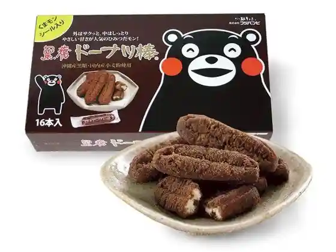
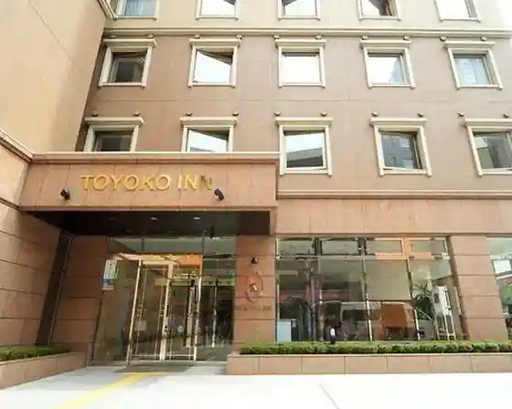
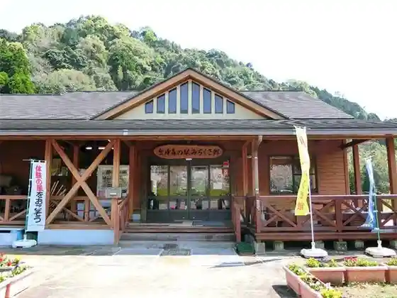
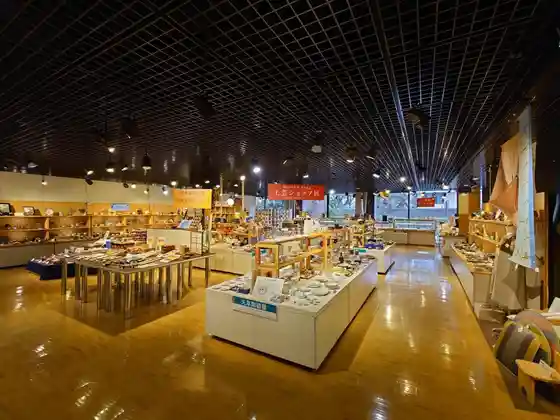

Kumamoto
Kumamoto · Kumamoto
Kumamoto
Highlighted on the Kumamoto map.
Sights
Fujibambi

Toyoko INN Kumamoto Shin City Machi

Tennen Onsen Rikka Baths Domiiin Kumamoto
Kinpo Mori no Eki Michikusa Kan

Kumamoto Ken Dentokogei Kan

Kumamoto Kogei Hall
Shimada Art Museum
Kumamoto Prefectural Art Museum Bunkan
Kumamoto Prefectural Art Museum Honkan
Ueki Onsen
Kumamoto Ken Bussan Kan
Kumamoto Minato Bussan Kan
Takuma Onsen Kami Sonoyama So
So Keien (Sokeien)
Suizenji Kyosai Kaikan Gureshia
Sakura no Baba Shiro Sai En
Koyoi no Yuyado Yuzen
Kumamoto Eki
Kuma Monsukuea
Roadside Station Suika no Sato Ueki
O Kashi no Kaori Ume Kumamoto Eki Mise
Jun Sai Kan Sakura LIQUOR Kuma BAR
Kumamoto Ken Shuzokenkyujo
Kumamoto Kabo
Iwata Koporeshon
Kiyomasa Seika
Itsuki Shokuhin
O Kashi no Kaori Ume Hakusan Main Shop
Futaba
Kumamoto Museum
Kumamoto Gendai Art Museum
Hanaoka Yama Bussha Ri to
Myo Kai Jiseki Hosokawa Ie O Byosho (Kitaoka Nature Park)
Shirakawa Wakuwaku Land (Shirakawa Chiiki Bosai Center)
Mei Yatsuhashi (Meihachibashi)
Tsuri Ko Sono (Chokoen)
Tanio Saki Umebayashi Park
Kumamoto Mizu no Science Museum
Honmyo Tera
Takahashi Inari Shrine
Kato Shrine
Kumamoto Shiro Inari Shrine
Honmyo Tera Kato Kiyomasa Ko Memorial Museum
Gaku Hayashiji
Fujisaki Hachi Hata Miya
Kitaoka Shrine
Koizumi Yakumo Kumamoto Kyukyo
Mei Ju Hashi (Meijubashi)
Kyu Hosokawa Gyobu Tei
Kumamoto Daigaku Go Taka Memorial Museum
Rideru, Raito Ryojo Shi Memorial Museum
Natsumesoseki Nai Tsuboi Kyukyo
Ue Kumamoto Eki
SAKURA MACHI Kumamoto (Sakuramachikumamoto)
Kumamoto Shiro
Fudoparu Kumamoto
Kumamoto Minato
Fureai no Shinrin Shinrin Gakushu Kan
Ono Izumi Park
Hakkei Mizutani Park (Hake no Miyakoen)
Zuigan Jiseki (Zuiganjiato)
Toge no Chaya Park Toge no Chaya Museum
Kihara Fudo Mikoto
Kumo Gan Zendera
Gohyaku Rakan
Rei Gan Hora
Tabaruzaka Seinan Senso Museum
Yokoi Shonan Memorial Museum (Yoji Ken)
Tourist Farm Kichiji Sono
Yu Mine Sono Furutsu Land
Akuadomu Kumamoto (Kumamoto Sogo Okunai Puru)
Kumamoto Kencho Puromunado (Icho Namiki)
Gotsu Mizumi
Musashi Tsuka Park
Suizenji Joshu Sono (Suizenji Park)
Eto Botohausu
Kengun Shrine
Miso Tenjin (Hon Village Shrine)
Goto Kore Yama Memorial Museum
Kumamoto Bungaku Rekishikan
Ishidatami no Michi (Kusamakura Haikingukosu)
Mitake
Tatsuta Yama
Shawa Tori
Jotsu A Ga Do
Shita Tori A Ga Do
Ueno Uradori (Kami no Uradori)
Namiki Saka
Okusu Tori
Ishigami Yama Park
Tsuboi Kawa Ryokuchi (Park)
Tabaruzaka Park
Shussui Shrine (Izumijinja)
Shichi Honkan Gun Bochi (Nanamotokangumbochi)
Kita Sen Tambata Kyukyo
Yokoi Shonan to Ishin Gunzo (Takahashi Koennai)
Kato Kiyomasa Ko Zo
Kengun Jieitai Tori
Kiyomizudera
San Satoshi Do
Enmei Mizu
Kawauchi no Dandambatake
Kumamoto Shiro Museum Wakuwaku Za
Higo Yoka Mon Market
Tatsuta Nature Park Yasushi Kachi Jiseki
Fukuda Ya
Kumamoto Wa Suki Tsukasa Kan
Ekusutoruin Kumamoto Suizenji
Ekusutoruin Kumamoto Ginzadori
Toyoko INN Kumamoto Sakura Town Basutaminaru Mae
Toyoko INN Kumamoto Ekimae
Toyoko INN Kumamoto Shiro Tori Town Suji
O Kashi Tokoro Tenmei Do
CHEZ Tani Ryu Dan Mise
Sunny Blue
Kumamoto Wainarii (Kumamoto Wain Farm Nishisato Jozosho)
Daifuku Yu
Yoyasu Yu
Taka Baths
Somemono to Yado no Nakajima Ya
GuestHouse426
Sumitsuguhausu Nishi
Sakura no Baba Shiro Sai En Sogo Tourist Information
Kokon Denju no Kan
Kumamoto Do Botanical Garden
Shochu Ba Naka
Kuma Mombirejji
Matsuya Bekkan
Tabi Tei Matsuya Honkan Suizenji
Autodoafiirudo
Tatsuta Yama Kei Forest
Hanaoka Yama
Tsuruya Hyakkaten
Oshan'aro
B&S Kumamoto Ezu
B&S Kumamoto Fujisakigumae
B&S Kumamoto Shimotori
B&S Kumamoto Shinmachi 1
SAKURA ROOMS SIMOTORI
SAKURA ROOMS TSUKIDE
kichijien cafe (Kichijien Kafe)
Man Hiyama Green Park
Utsuwato Zakka Shoku Iori
Gatsu Machi
Kumamoto Mizu no Geihinkan O Chozu Forest (Kyu Kakihara Yo Masu Ba)
Amyu Plaza Kumamoto
Kawajiri Shoten Sui
THE BLOSSOM KUMAMOTO
Yamazaki Sugawara Shrine
Higo no Satoyama Gyararii
Rufi Zo
Choppa Zo
Toranosuke
Sumitsuguhausu
Furuhon to Shinkan scene (Shiin)
my chair books (Maicheabukkusu)
OMO5 Kumamoto (Omo) by Hoshino Resort
fav Kumamoto (Fabukumamoto)
Kodomo Hon Forest Kumamoto
Kawakami Saketen
I no Moto Saketen
somari PRIVATE SAUNA&STONE SPA (Somaripuraibetosauna & Sutonsupa)
Luxury Sauna&Spa Yuya Mizu Zen (Yuyasuizen)
joka SAUNA (Jokasauna)
Viainpuraimu Kumamoto
NATSUME PERSEUM (Natsume Pajiamu)
Yamagarabirejji
Ueki Onsen Hotei Yu
Viainpuraimu Kumamoto
Natsumesoseki Oe Kyukyo